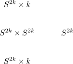
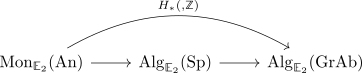

even sphere without H-space structure
Proposition
Let $S^n$ be the n-sphere for even $n = 2k$. Then $S^n$ does not admit a H-space.
Proof
k-theory proof
Suppose then consider

alternative proof
todo: one should (?) be able to show that this proof even denies the existence of an H-space structure, not only \(\mathbb{E}_1\) group struture.
Assume that $S^{2n}$ admits an \(\mathbb{E}_1\) structure, then $\Omega S^{2n}$ admits an \(\mathbb{E}_2\) structure. In particular -- since free R-module spectrum functor is lax monoidal for spectra homotopy group functor from spectra to graded abelian groups is lax monoidal -- we get an induced functor

which shows that $H_*(\Omega S^{2n}, \mathbb{Z})$ admits a graded-commutative ring structure. But integral homology ring of the loop space of the sphere shows that $H_*(\Omega S^{2n}, \mathbb{Z}) = \mathbb{Z}[x_{2n-1}]$, where $x_{2n-1}$ does not square to zero, i.e., $H_*(\Omega S^{2n}, \mathbb{Z})$ can't be graded-commutative.